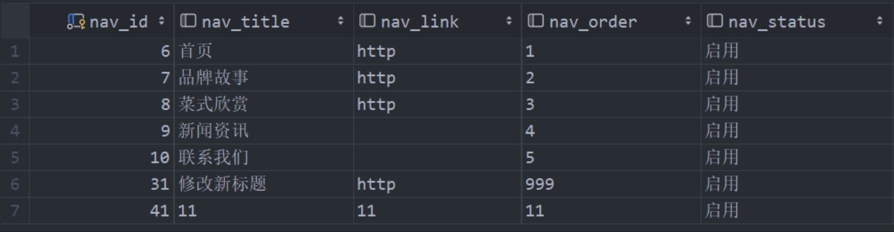
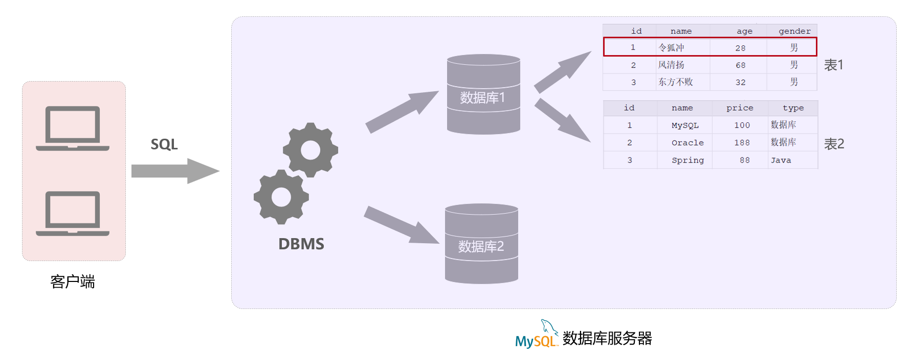
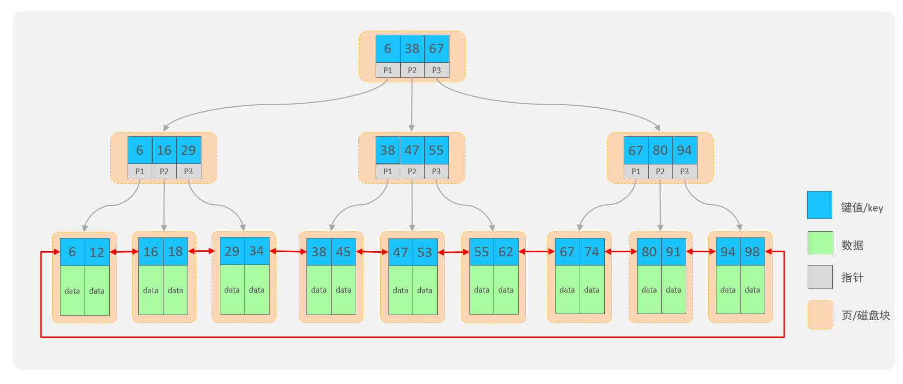

MySQL简易教程
1. 数据库概述
数据库：英文为 DataBase，简称 DB，它是存储和管理数据的仓库。
像我们日常访问的电商网站京东，企业内部的管理系统 OA、ERP、CRM 这类的系统，大家所看到的数据，都是存储在数据库中的。这些数据只是在浏览器或 app 中展示出来而已，数据的存储和管理都是数据库负责的。

数据库管理系统：DataBase Management System (DBMS)，操纵和管理数据库的大型软件。
SQL：Structured Query Language，结构化查询语言，操作关系型数据库的编程语言，定义了一套操作关系型数据库的统一标准。学习数据库开发，最为重要的就是学习 SQL 语句 。
程序员给数据库管理系统(DBMS)发送 SQL 语句，再由数据库管理系统操作数据库当中的数据。
下面罗列一些常见数据库：
- Oracle：大型的收费数据库，Oracle 公司产品，价格昂贵。（通常是不差钱的公司会选择使用这个数据库）
- MySQL：开源免费的中小型数据库，后来 Sun 公司收购了 MySQL，而 Oracle 又收购了 Sun 公司。目前 Oracle 推出两个版本的 Mysql：社区版(开源免费)、商业版(收费)。
- SQL Server：Microsoft 公司推出的收费的中型数据库，C#、.net等语言常用。
- PostgreSQL：开源免费的中小型数据库。
- DB2：IBM 公司的大型收费数据库产品。
- SQLLite：嵌入式的微型数据库。Android 内置的数据库采用的就是该数据库。
- MariaDB：开源免费的中小型数据库。是 MySQL 数据库的另外一个分支、另外一个衍生产品，与 MySQL 数据库有很好的兼容性。
这些数据库都是属于关系型数据库，要操作关系型数据库都是通过 SQL 语句来实现的，而 SQL 语句又是操作关系型数据库的统一标准。
2. MySQL 概述
2.1 安装连接和卸载
MySQL官方提供了两个版本：
- 商业版本（MySQL Enterprise Edition）
- 该版本是收费的，可以免费使用30天。 官方会提供对应的技术支持。
- 社区版本（MySQL Community Server）
- 该版本是免费的，但是 MySQL 不会提供任何的技术支持。
下载地址：MySQL :: Download MySQL Community Server (Archived Versions)
- 下载完成直接解压，添加环境变量，在系统变量中新建 MYSQL_HOME 设定为
MySQL 解压目录，在 Path 中添加 %MYSQL_HOME%，在 cmd 中输入
mysql如果提示Can't connect to MySQL server on 'localhost'则证明添加成功。 - 在命令行中输入
mysqld --initialize-insecure初始化 MySQL，如果出现没有出现报错信息，则证明 data 目录初始化没有问题，此时再查看 MySQL 目录下已经有 data 目录生成。 - 输入
mysqld -install注册 MySQL 服务
1 | |
也可以使用 小皮面板-好用、安全、稳定的Linux服务器面板！ (xp.cn) 一键启动
真实的企业开发中，MySQL 数据库服务器是在公司的服务器上安装的，需要在我们的电脑上去远程连接这台 MySQL。如果想提前体验一下企业中数据库的使用方式，可以在我们的电脑上安装一个 VMware，在 Vmware 虚拟机上在安装一个服务器操作系统 Linux，再在 Linux 服务器上安装各种企业级软件，或者使用腾讯云阿里云等云服务。
2.2 数据模型
关系型数据库（RDBMS） 建立在关系模型基础上，由多张相互连接的二维表组成的数据库。

二维表的优点：
- 使用表存储数据，格式统一，便于维护
- 使用 SQL 语言操作，标准统一，使用方便，可用于复杂查询
之前提到的 MySQL、Oracle、DB2、SQLServer 这些都是属于关系型数据库，里面都是基于二维表存储数据的。
结论：基于二维表存储数据的数据库就成为关系型数据库，不是基于二维表存储数据的数据库，就是非关系型数据库（比如 Redis，就属于非关系型数据库）。
MySQL 数据库当中到底是如何来存储数据的，也就是 MySQL 的数据模型。具体的结构图如下:

一个数据库服务器中可以创建多个数据库，一个数据库中也可以包含多张表，而一张表中又可以包含多行记录。
在 MySQL 数据库服务器中存储数据： 1. 先创建数据库（可以创建多个数据库，之间是相互独立的） 2. 在数据库下再去创建数据表（一个数据库下可以创建多张表） 3. 再将数据存放在数据表中（一张表可以存储多行数据）
2.3 SQL 简介
SQL：一门操作关系型数据库的编程语言，定义操作所有关系型数据库的统一标准。
SQL 通用语法：
- SQL 语句可以单行或多行书写，以分号结尾。
- SQL 语句可以使用空格/缩进来增强语句的可读性。
- MySQL 数据库的 SQL 语句不区分大小写。
- 单行注释：
--注释内容 或#注释内容(MySQL 特有) - 多行注释：
/*注释内容*/
SQL 语句分为四大类：
| 分类 | 全称 | 说明 |
|---|---|---|
| DDL | Data Definition Language | 数据定义语言，用来定义数据库对象(数据库，表，字段) |
| DML | Data Manipulation Language | 数据操作语言，用来对数据库表中的数据进行增删改 |
| DQL | Data Query Language | 数据查询语言，用来查询数据库中表的记录 |
| DCL | Data Control Language | 数据控制语言，用来创建数据库用户、控制数据库的访问权限（少用） |
开发数据库的三个阶段：
- 数据库设计阶段
- 参照页面原型以及需求文档设计数据库表结构
- 数据库操作阶段
- 根据业务功能的实现，编写 SQL 语句对数据表中的数据进行增删改查操作
- 数据库优化阶段
- 通过数据库的优化来提高数据库的访问性能。优化手段：索引、SQL 优化、分库分表等
2.4 数据类型
MySQL 中的数据类型有很多，主要分为三类：数值类型、字符串类型、日期时间类型。
数值类型：无符号在类型后面加 unsigned 即可，例如 tinyint unsigned。
| 类型 | 大小 | 有符号(SIGNED)范围 | 无符号(UNSIGNED)范围 | 描述 |
|---|---|---|---|---|
TINYINT |
1byte | (-128，127) | (0，255) | 小整数值 |
SMALLINT |
2bytes | (-32768，32767) | (0，65535) | 大整数值 |
MEDIUMINT |
3bytes | (-8388608，8388607) | (0，16777215) | 大整数值 |
INT/INTEGER |
4bytes | (-2147483648，2147483647) | (0，4294967295) | 大整数值 |
BIGINT |
8bytes | (-263，263-1) | (0，2^64-1) | 极大整数值 |
FLOAT |
4bytes | (-3.402823466 E+38，3.402823466351 E+38) | 0 和 (1.175494351 E-38，3.402823466 E+38) | 单精度浮点数值 |
DOUBLE |
8bytes | (-1.7976931348623157 E+308，1.7976931348623157 E+308) | 0 和 (2.2250738585072014 E-308，1.7976931348623157 E+308) | 双精度浮点数值 |
DECIMAL |
依赖于M(精度)和D(标度)的值 | 依赖于M(精度)和D(标度)的值 | 小数值(精确定点数) |
字符串类型：char 与 varchar 都可以描述字符串，char 是定长字符串，指定长度多长，就占用多少个字符，和字段值的长度无关 。而 varchar 是变长字符串，指定的长度为最大占用长度 。由于 varchar 需要去判断字符长度，所以 char 的性能会更高些。
char：性能高 浪费空间 varchar：性能低 节省空间
| 类型 | 大小 | 描述 |
|---|---|---|
CHAR |
0-255 bytes | 定长字符串(需要指定长度) |
VARCHAR |
0-65535 bytes | 变长字符串(需要指定长度) |
TINYBLOB |
0-255 bytes | 不超过255个字符的二进制数据 |
TINYTEXT |
0-255 bytes | 短文本字符串 |
BLOB |
0-65 535 bytes | 二进制形式的长文本数据 |
TEXT |
0-65 535 bytes | 长文本数据 |
MEDIUMBLOB |
0-16 777 215 bytes | 二进制形式的中等长度文本数据 |
MEDIUMTEXT |
0-16 777 215 bytes | 中等长度文本数据 |
LONGBLOB |
0-4 294 967 295 bytes | 二进制形式的极大文本数据 |
LONGTEXT |
0-4 294 967 295 bytes | 极大文本数据 |
日期时间类型
| 类型 | 大小 | 范围 | 格式 | 描述 |
|---|---|---|---|---|
DATE |
3 | 1000-01-01 至 9999-12-31 | YYYY-MM-DD | 日期值 |
TIME |
3 | -838:59:59 至 838:59:59 | HH:MM:SS | 时间值或持续时间 |
YEAR |
1 | 1901 至 2155 | YYYY | 年份值 |
DATETIME |
8 | 1000-01-01 00:00:00 至 9999-12-31 23:59:59 | YYYY-MM-DD HH:MM:SS | 混合日期和时间值 |
TIMESTAMP |
4 | 1970-01-01 00:00:01 至 2038-01-19 03:14:07 | YYYY-MM-DD HH:MM:SS | 混合日期和时间值，时间戳 |
实际开发中常用 create_time 记录数据插入的时间。 update_time 记录数据最后更新的时间。
3. 数据库设计-DDL
Data Definition Language：数据定义语言，用来定义数据库对象(数据库，表，字段)。
3.1 数据库操作
创建：
1 | |
使用：
1 | |
查询：
1 | |
删除：
1 | |
上述语法中
[]代表可选项，database 也可以替换成 schema。但推荐使用 database。
3.2 表操作
3.2.1 创建
1 | |
约束： 概念：所谓约束就是作用在表中字段上的规则，用于限制存储在表中的数据。 作用：就是来保证数据库当中数据的正确性、有效性和完整性。
在 MySQL 数据库中，提供了以下5种约束：
| 约束 | 描述 | 关键字 |
|---|---|---|
| 非空约束 | 限制该字段值不能为 null | not null |
| 唯一约束 | 保证字段的所有数据都是唯一、不重复的 | unique |
| 主键约束 | 主键是一行数据的唯一标识，要求非空且唯一 | primary key |
| 默认约束 | 保存数据时，如果未指定该字段值，则采用默认值 | default |
| 外键约束 | 让两张表的数据建立连接，保证数据的一致性和完整性 | foreign key |
常用主键自增：
auto_increment- 每次插入新的行记录时，数据库自动生成 id 字段(主键)下的值 - 具有auto_increment的数据列是一个正数序列开始增长(从1开始自增)
3.3.2 查询
1 | |
3.3.3 修改
- 添加字段
1 | |
- 修改字段类型
1 | |
- 修改字段名和字段类型
1 | |
- 删除字段
1 | |
- 修改表名
1 | |
3.3.4 删除
1 | |
在删除表时，表中的全部数据也会被删除。
3.3.5 图形化工具
在项目开发当中，为了提高开发效率，都会借助于现成的图形化管理工具来操作数据库。 目前 MySQL 主流的图形化界面工具有 SQLyog、Navicat、DataGrip，在旗舰版 IDEA 中集成了 DataGrip。

在相应的库或表上右键使用 new 来新建，使用 modify 来修改，使用 drop 删除，十分方便。
4. 数据库操作-DML
Data Manipulation Language：数据操作语言，用来对数据库中表的数据记录进行增、删、改操作。
4.1 增加 INSERT
- 向指定字段添加数据
1 | |
- 全部字段添加数据
1 | |
- 批量添加数据（指定字段）
1 | |
- 批量添加数据（全部字段）
1 | |
插入数据时，指定的字段需要与值的顺序是一一对应的。 字符串和日期型数据应该包含在引号中。 插入的数据大小，应该在字段的规定范围内。
4.2 修改 UPDATE
1 | |
UPDATE 语句如果没有条件，则会修改整张表的所有数据。 在修改数据时，一般需要同时修改公共字段 update_time，将其修改为当前操作时间。
4.3 删除 DELETE
1 | |
DELETE 语句如果没有条件，则会删除整张表的所有数据。 DELETE 语句不能删除某一个字段的值(如果要操作，可以使用 UPDATE，将该字段的值置为 NULL)。
5. 数据库操作-DQL
Data Query Language：数据查询语言，用来查询数据库表中的记录。
查询操作是所有 SQL 语句当中最为常见，也是最为重要的操作。在一个正常的业务系统中，查询操作的使用频次是要远高于增删改操作的。当我们打开某个网站或 APP 所看到的展示信息，都是通过从数据库中查询得到的，而在这个查询过程中，还会涉及到条件、排序、分页等操作。
1 | |
5.1 基本查询
- 查询多个字段
1 | |
- 查询所有字段（通配符）
1 | |
- 设置别名
1 | |
- 去除重复记录
1 | |
5.2 条件查询
1 | |
在 SQL 语句当中构造条件的运算符分为两类：比较运算符和逻辑运算符
| 比较运算符 | 功能 |
|---|---|
> |
大于 |
>= |
大于等于 |
< |
小于 |
<= |
小于等于 |
= |
等于 |
<> 或 != |
不等于 |
between ... and ... |
在某个范围之内(含最小、最大值) |
in(...) |
在 in 之后的列表中的值，多选一 |
like '占位符' |
模糊匹配(_匹配单个字符,
%匹配任意个字符) |
is null |
是 null，不能使用 =null |
| 逻辑运算符 | 功能 |
|---|---|
and 或 && |
并且 (多个条件同时成立) |
or 或 \|\| |
或者 (多个条件任意一个成立) |
not 或 ! |
非 , 不是 |
5.3 聚合函数
前面的查询都是横向查询，根据条件一行一行的进行判断，而使用聚合函数查询就是纵向查询，它是对一列的值进行计算，然后返回一个结果值。（将一列数据作为一个整体，进行纵向计算）
1 | |
| 函数 | 功能 |
|---|---|
count |
统计数量，按照列去统计有多少行数据。 |
max |
最大值，计算指定列的最大值。 |
min |
最小值，计算指定列的最小值。 |
avg |
平均值，计算指定列的平均值。 |
sum |
求和，计算指定列的数值和，如果不是数值类型，那么计算结果为0。 |
注意 : 所有聚合函数都会忽略空值，对 NULL 值不作为统计。 统计数量可以使用：count(*) count(字段) count(常量)，推荐使用count(*)，MySQL 底层对 count(*) 有优化。
5.4 分组查询
按列进行分类(指定列下相同的数据归为一类)，然后可以对分类完的数据进行合并计算。
1 | |
分组之后，查询的字段一般为聚合函数和分组字段，查询其他字段无任何意义 执行顺序：where > 聚合函数 > having
where 与 having 区别：
- 执行时机不同：where 是分组之前进行过滤，不满足 where 条件，不参与分组；而 having 是分组之后对结果进行过滤。
- 判断条件不同：where 不能对聚合函数进行判断，而 having 可以。
5.5 排序查询
排序在开发中是非常常见的一个操作，有升序排序，也有降序排序。
1 | |
排序方式：
- ASC ：升序（默认值）
- DESC：降序
如果是升序, 可以不指定排序方式 ASC。 如果是多字段排序，当第一个字段值相同时，才会根据第二个字段进行排序。
5.6 分页查询
1 | |
起始索引从0开始，起始索引 = （查询页码 - 1）* 每页显示记录数。 分页查询是数据库的方言，不同的数据库有不同的实现，MySQL 中是 LIMIT。 如果查询的是第一页数据，起始索引可以省略，直接简写为 limit 10。
查询的数据可以通过 Apache ECharts 很方便地使用图表显示出来。
6. 多表设计
6.1 一对多
表结构之间存在联系，一条数据对应多条数据就是一对多，例如学生表和班级表，一个班级里可以有很多学生。
在数据库表中多的一方，添加外键字段，来关联另一方的主键。
外键约束：让两张表的数据建立连接，保证数据的一致性和完整性。
1 | |
物理外键和逻辑外键
- 物理外键
- 使用
foreign key定义外键关联另外一张表。 - 缺点：
- 影响增、删、改的效率（需要检查外键关系）。
- 仅用于单节点数据库，不适用与分布式、集群场景。
- 容易引发数据库的死锁问题，消耗性能。
- 使用
- 逻辑外键
- 在业务层逻辑中，解决外键关联。
在现在的企业开发中，很少会使用物理外键，都是使用逻辑外键。 甚至在一些数据库开发规范中，会明确指出禁止使用物理外键
foreign key
6.2 一对一
一对一关系表通常是用来做单表的拆分，就是将一张大表拆分成两张小表，将大表中的一些基础字段放在一张表当中，将其他不太常用的字段放在另外一张表当中，以此来提高数据的操作效率。一对一可以看成一种特殊的一对多，只需要在任意一方来添加一个外键就可以了。
在任意一方加入外键，关联另外一方的主键，并且设置外键为唯一的(UNIQUE)
6.3 多对多
多对多的关系在开发中也比较常见。比如：学生和课程的关系，一个学生可以选修多门课程，一个课程也可以供多个学生选修。
建立第三张中间表，中间表至少包含两个外键，分别关联两方主键
6.4 小结
- 一对多：在多的一方添加外键，关联另外一方的主键。
- 一对一：任意一方添加外键，关联另外一方的主键。
- 多对多：通过中间表来维护，中间表的两个外键分别关联两张表的主键。
7. 多表查询
7.1 概述
多表查询：查询时从多张表中获取所需数据。
执行多表查询，只需要使用逗号分隔多张表即可，如：
select 字段列表 from 表1, 表2;
多表查询会产生笛卡尔积，也就是两个表的所有组合情况。要想消除笛卡尔积，只需要给多表查询加上连接查询的条件即可。
笛卡尔积: 笛卡尔乘积是指在数学中，两个集合(A集合 和 B集合)的所有组合情况。(在多表查询时，需要消除无效的笛卡尔积，只保留表关联部分的数据)
多表查询可以分为：
- 连接查询
- 内连接：查询交集部分数据
- 外连接：
- 左外连接：查询左表所有数据(包括非交集部分的左表数据)
- 右外连接：查询右表所有数据(包括非交集部分的右表数据)
- 子查询

7.2 连接查询
7.2.1 内连接
- 隐式内连接
1 | |
- 显式内连接
1 | |
多表查询时给表起别名：
1 | |
一旦为表起了别名，就不能再使用表名来指定对应的字段了，此时只能够使用别名来指定字段。
7.2.2 外连接
- 左外连接
1 | |
左外连接相当于查询表1(左表)的所有数据，包含表1和表2交集部分的数据。
- 右外连接
1 | |
右外连接相当于查询表2(右表)的所有数据，包含表1和表2交集部分的数据。 内连接只能查询到两表之间有联系的数据，而外连接可以查询到没联系的数据。 左外连接和右外连接是可以相互替换的，只需要调整连接查询时 SQL 语句中表的顺序就可以。在日常开发使用时，更偏向于左外连接。
7.3 子查询
SQL 语句中嵌套 select 语句，将查询的结果作为条件再次进行查询等操作，称为嵌套查询，又称子查询。
1 | |
子查询外部的语句可以是 insert / update / delete / select 的任何一个，最常见的是 select。
根据子查询结果的不同分为：
- 标量子查询
- 子查询返回的结果为单个值(数字、字符串、日期等)。
- 常用的操作符：
= <> > >= < <=
- 列子查询
- 子查询结果为一列。
- 常用的操作符：
in 、not in
- 行子查询
- 子查询结果为一行
- 常用的操作符：
= 、<> 、in 、not in
1 | |
- 表子查询
- 子查询结果为多行多列，常作为临时表。
- 常用的操作符：
in
子查询可以书写的位置：
where之后from之后select之后
8. 事务
在实际的业务开发中，有些业务操作要多次访问数据库。一个业务要发送多条 SQL 语句给数据库执行。需要将多次访问数据库的操作视为一个整体来执行，要么所有的 SQL 语句全部执行成功；要么其中有 SQL 语句失败，就进行事务的回滚，所有的 SQL 语句全部执行失败。
事务是一组操作的集合，它是一个不可分割的工作单位。事务会把所有的操作作为一个整体一起向系统提交或撤销操作请求，即这些操作要么同时成功，要么同时失败。
MYSQL 中有两种方式进行事务的操作：
- 自动提交事务：执行一条 SQL 语句提交一次事务。（MySQL 的事务默认是自动提交）
- 手动提交事务：先开启，再提交。
- 开启手动控制事务
1 | |
- 提交事务
1 | |
- 回滚事务
1 | |
手动提交事务使用步骤： - 第1种情况：开启事务 => 执行 SQL 语句 => 成功 => 提交事务 - 第2种情况：开启事务 => 执行 SQL 语句 => 失败 => 回滚事务
事务的四大特性：ACID
- 原子性（Atomicity）：事务是不可分割的最小单元，要么全部成功，要么全部失败。
- 一致性（Consistency）：事务完成时，必须使所有的数据都保持一致状态。
如果事务成功完成，那么数据库的所有变化将生效。 如果事务执行出现错误，那么数据库的所有变化将会被回滚(撤销)，返回到原始状态。
- 隔离性（Isolation）：数据库系统提供的隔离机制，保证事务在不受外部并发操作影响的独立环境下运行。
多个用户并发的访问数据库时，一个用户的事务不能被其他用户的事务干扰。 多个并发的事务之间相互隔离，一个事务的成功或失败对其他的事务没有影响。
- 持久性（Durability）：事务一旦提交或回滚，它对数据库中的数据的改变就是永久的。
9. 索引
索引(index)：是帮助数据库高效获取数据的数据结构，使用空间换时间，使用索引可以提高查询的效率。
- 优点：
- 提高数据查询的效率，降低数据库的 IO 成本。
- 通过索引列对数据进行排序，降低数据排序的成本，降低 CPU 消耗。
- 缺点：
- 索引会占用存储空间。
- 索引大大提高了查询效率，同时却也降低了 insert、update、delete 的效率。（增删改除了本身操作，还需要维护索引表）
现在存储空间并不是问题，而且索引占用的存储空间也不是很大；在实际开发中，查询占了 90% 以上，增删改本就不太常用，优化主要是针对查询进行优化；缺点已经不算什么了。
MySQL 数据库支持的索引结构有很多，如：Hash 索引、B+Tree 索引、Full-Text 索引等。我们平常所说的索引，如果没有特别指明，都是指默认的 B+Tree 结构组织的索引。
如果使用二叉搜索树，当我们向二叉查找树保存数据时，是按照从大到小(或从小到大)的顺序保存的，极端情况下会形成一个单向链表，搜索性能会打折扣。

使用二叉树或红黑树最大的问题就是在数据量大的情况下，树的层级比较深，会影响检索速度。因为不管是二叉搜索树还是红黑树，一个节点下面只能有两个子节点。在数据量大的情况下，就会造成树的高度比较高，检索速度就会降低。

为了减少树的高度，就得增加树的宽度，不再像红黑树一样每个节点只能保存一个数据，引入另一种数据结构，一个节点可以保存多个数据，这样宽度就会增加，从而降低树的高度。这种数据结构 B+Tree 就满足。
B+Tree(多路平衡搜索树)：
- 每一个节点，可以存储多个 key（有 n 个 key，就有 n 个指针）。
- 所有的数据都存储在叶子节点，非叶子节点仅用于索引数据。
- 叶子节点形成一个双向链表，便于数据的排序及区间范围查询。

非叶子节点都是由key+指针域组成的，一个key占8字节，一个指针占6字节，而一个节点总共容量是16KB，那么可以计算出一个节点可以存储的元素个数：16*1024字节 / (8+6)=1170个元素。
- 查看mysql索引节点大小：show global status like ‘innodb_page_size’; – 节点大小：16384
当根节点中可以存储1170个元素，那么根据每个元素的地址值又会找到下面的子节点，每个子节点也会存储1170个元素，那么第二层即第二次IO的时候就会找到数据大概是：1170*1170=135W。也就是说B+Tree数据结构中只需要经历两次磁盘IO就可以找到135W条数据。
对于第二层每个元素有指针，那么会找到第三层，第三层由key+数据组成，假设key+数据总大小是1KB，而每个节点一共能存储16KB，所以一个第三层一个节点大概可以存储16个元素(即16条记录)。那么结合第二层每个元素通过指针域找到第三层的节点，第二层一共是135W个元素，那么第三层总元素大小就是：135W*16结果就是2000W+的元素个数。
结合上述分析B+Tree有如下优点：
千万条数据，B+Tree可以控制在小于等于3的高度
所有的数据都存储在叶子节点上，并且底层已经实现了按照索引进行排序，还可以支持范围查询，叶子节点是一个双向链表，支持从小到大或者从大到小查找
- 创建索引
1 | |
- 查看索引
1 | |
- 删除索引
1 | |
主键字段，在建表时会自动创建主键索引，是所有索引中性能最高的 添加唯一约束时，数据库实际上会添加唯一索引